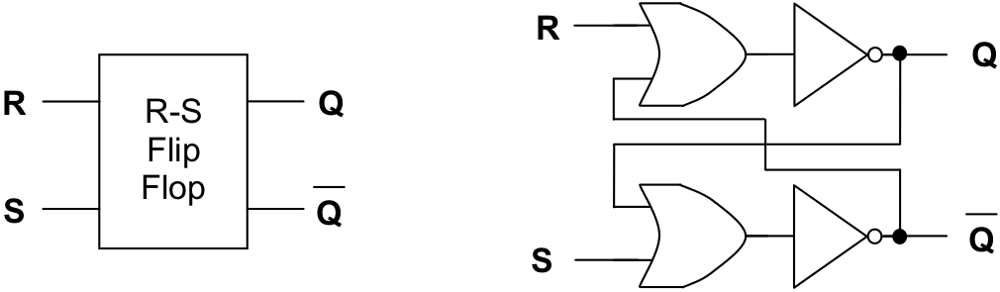
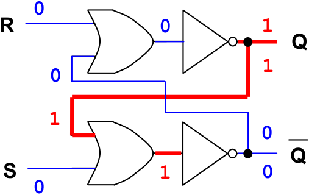
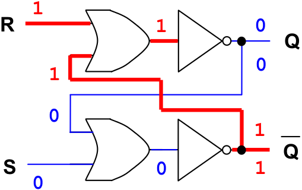
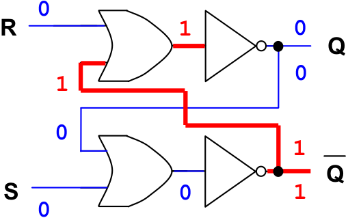
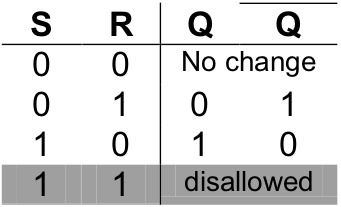

An R-S flip-flop can be constructed from two interconnected nor gates. illustrates such an R-S flip-flop. As discussed in , a nor is simply an or gate followed by a not gate. For clarity, shows the two nor gates of the flip-flop as having been decomposed into their underlying or and not gates.
R-S Flip-flop
An R-S flip-flop holding a “1”
R-S flip-flops have two inputs and two outputs. The inputs are usually labeled R for “Reset” and S for “Set”. The outputs are traditionally labeled Q and Q, or “not Q”. Q is the complement, or opposite, of Q, so if Q is “1” then Q should be “0”, and vice versa.
The Q output of the flip-flop determines its state. In other words, examining the Q output is the same as seeing what is stored in the bit. The state can be a binary “1” (Set) or a binary “0” (Reset). When a flip-flop like the R-S is in one of its states (Set or Reset), it will remain unchanged until an appropriate signal or pulse is applied to one of its input lines. The ability of a flip-flop to hold the Q output constant until a signal is given to change the value of Q is why flip-flops are considered basic memory devices.
We begin our detailed analysis of the R-S flip-flop assuming that Q is initially high (“1”), and both R and S are low (“0”), as shown in . Since both of the inputs to the top or gate are low, its output is low, and the output of the top not gate (the Q signal) is high. This high output is fed back into the input of the bottom or gate making its output high and the output of the notgate (the Q signal) low. This is a stable circuit. While R and S remain low, Q will remain high and Q low. The bit is thus holding a “1”.
If we apply a “1” to the R (reset) input, in order to place a “0” into the bit, the following events occur. The output of the top nor gate (the Q signal) goes low, this is fed back to the input of the bottom nor gate, which causes its output (the Q signal) to go high. This signal is fed back to the top norgate, but since it already has another high input there is no change in the output – it remains low. This is a stable circuit, as shown in . The flip-flop has been reset to “0”.
An R-S flip-flop reset to “0”
If the reset signal is removed (set to low), the flip-flop remains in the reset, “0”, state since there is still a “1” input to the top nor gate from the Q input. This is shown in . Note that this is exactly the behavior we desire. In order for the flip-flop to be useful, it must be able to “remember” that it has been reset to “0” even after the reset signal is removed.
Now we apply a high signal to the S (set) input, in order to set the bit to “1”. This action causes the following events to occur. The output of the bottom nor gate becomes 0 since one of its inputs is now high. This low signal is applied as an input to the top nor gate, where the R input is also low. The output of the top nor is forced high, and this high output is fed back into the bottom nor gate, which does not change its state since its other input was already high. The flip-flop has been set to “1”, as can be seen in .
An R-S flip-flop holding a “0”

An R-S flip-flop set to “1”
Next, we remove the set signal. In other words, we put the S input back to low. This action does not change the output of the bottom nor gate since its other input is already high and the circuit remains in the set state, as shown in . Thus, once an R-S flip-flop receives a pulse, or “1”, down its set line, it will continue to hold that “1” until a reset signal (“1” down the reset line) is received.
Notice that state of the flip-flop shown in is identical to its original state given in . They both represent the flip-flop in its “1” state, with “0” on both input lines. Comparing and illustrates another feature of flip-flops. That is that the value output by the circuit is not solely dependent on its current inputs. When the R and S inputs are both low, “0”, the value output on the Q line depends on whether the most recent high, “1”, input was on the set line or the reset line. shows the circuit outputting a “0” on Q, because the most recent input operation was “reset”. shows the circuit outputting a “1”, because the most recent input operation was “set”.
An R-S flip-flop holding a “1”

An R-S flip-flop in a stable but invalid state
There is one other possible configuration of inputs we have not yet considered. What happens if both the R and S inputs are set to high at the same time – corresponding to an attempt to simultaneously store both a “0” and a “1” into a single bit? This is pictured in . The outputs do remain constant, but the R-S flip-flop is not in a valid state because Q and Q have identical values, yet they are always supposed to be the opposite of one another.
We conclude this introduction to the R-S flip-flop with its truth table.
Exercises for
-
Having the R and S values both be “1” at the same time creates an “undesirable” state for the R-S flip-flop. What combinational circuit would help us test whether the inputs to the R-S flip-flop are “desirable” or “undesirable”?